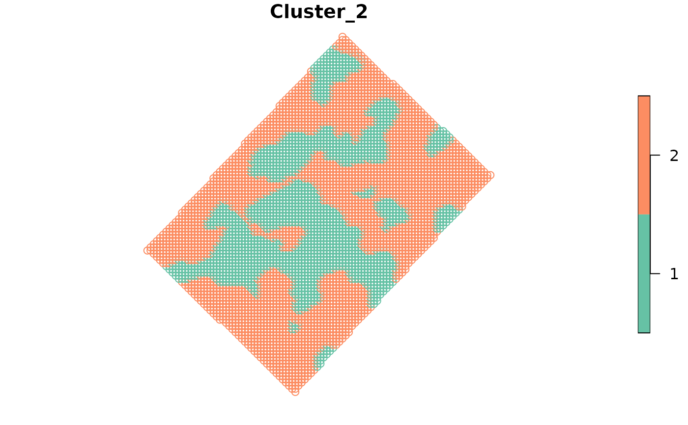

Performs a vectorized fuzzy k-means clustering, this procedure it is not spatial. The function is almost a wrapper of the function cmeans from the package e1071. Is intended to be used when `KM-sPC` procedure is not possible because data set has only 1 variable.
Usage
fuzzy_k_means(
data,
variables,
number_cluster = 3:5,
fuzzyness = 1.2,
distance = "euclidean"
)Arguments
- data
sf object
- variables
variables to use for clustering, if missing, all numeric variables will be used
- number_cluster
numericvector with number of final clusters- fuzzyness
A number greater than 1 giving the degree of fuzzification.
- distance
characterMust be one of the following: If "euclidean", the mean square error, if "manhattan", the mean absolute error is computed. Abbreviations are also accepted.
Examples
library(sf)
data(wheat, package = 'paar')
# Transform the data.frame into a sf object
wheat_sf <- st_as_sf(wheat,
coords = c('x', 'y'),
crs = 32720)
# Run the fuzzy_k_means function
fuzzy_k_means_results <- fuzzy_k_means(wheat_sf,
variables = 'Tg',
number_cluster = 2:4)
# Print the summaryResults
fuzzy_k_means_results$summaryResults
#> Clusters Iterations SSDW
#> 1 2 20 0.020516877
#> 2 3 43 0.010596950
#> 3 4 34 0.006439882
# Print the indices
fuzzy_k_means_results$indices
#> Num. Cluster Xie Beni Partition Coefficient Entropy of Partition
#> 1 2 2.340529e-05 0.9709446 0.04784131
#> 2 3 2.407361e-05 0.9603949 0.06536385
#> 3 4 2.348571e-05 0.9582419 0.06906399
#> Summary Index
#> 1 1.557271
#> 2 1.695319
#> 3 1.710485
# Print the cluster
head(fuzzy_k_means_results$cluster, 5)
#> Cluster_2 Cluster_3 Cluster_4
#> [1,] "2" "2" "2"
#> [2,] "2" "2" "2"
#> [3,] "2" "2" "2"
#> [4,] "2" "2" "2"
#> [5,] "2" "2" "2"
# Combine the results in a single object
wheat_clustered <- cbind(wheat_sf, fuzzy_k_means_results$cluster)
# Plot the results
plot(wheat_clustered[, "Cluster_2"])
